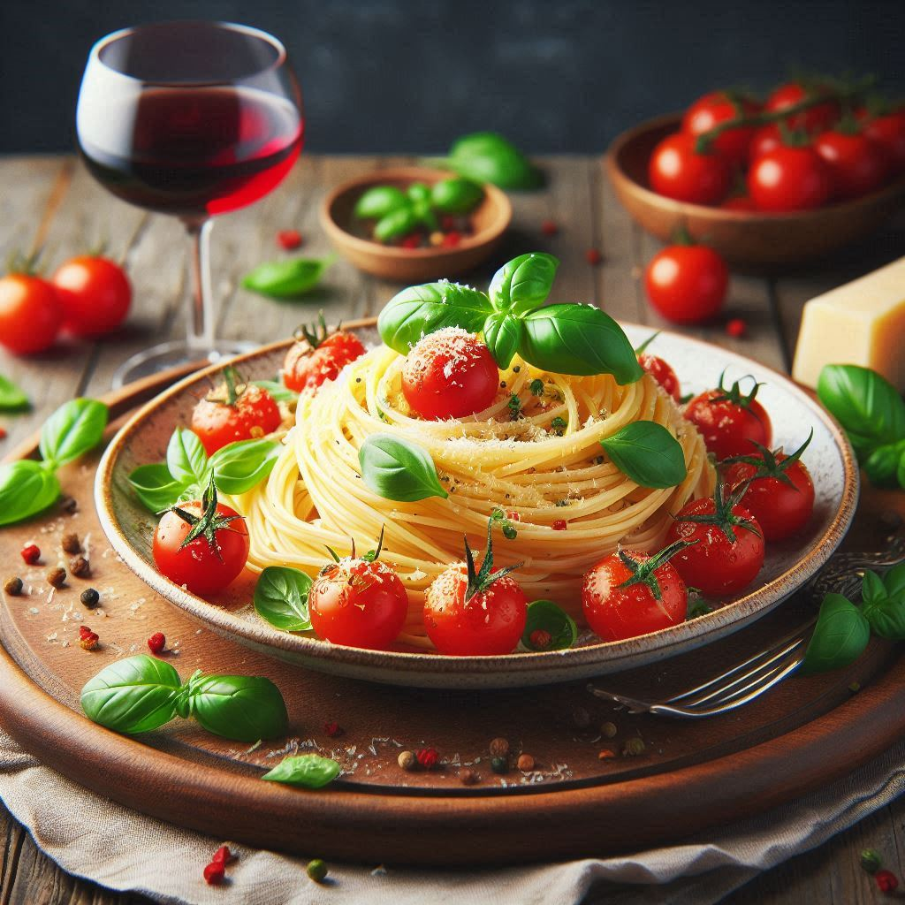
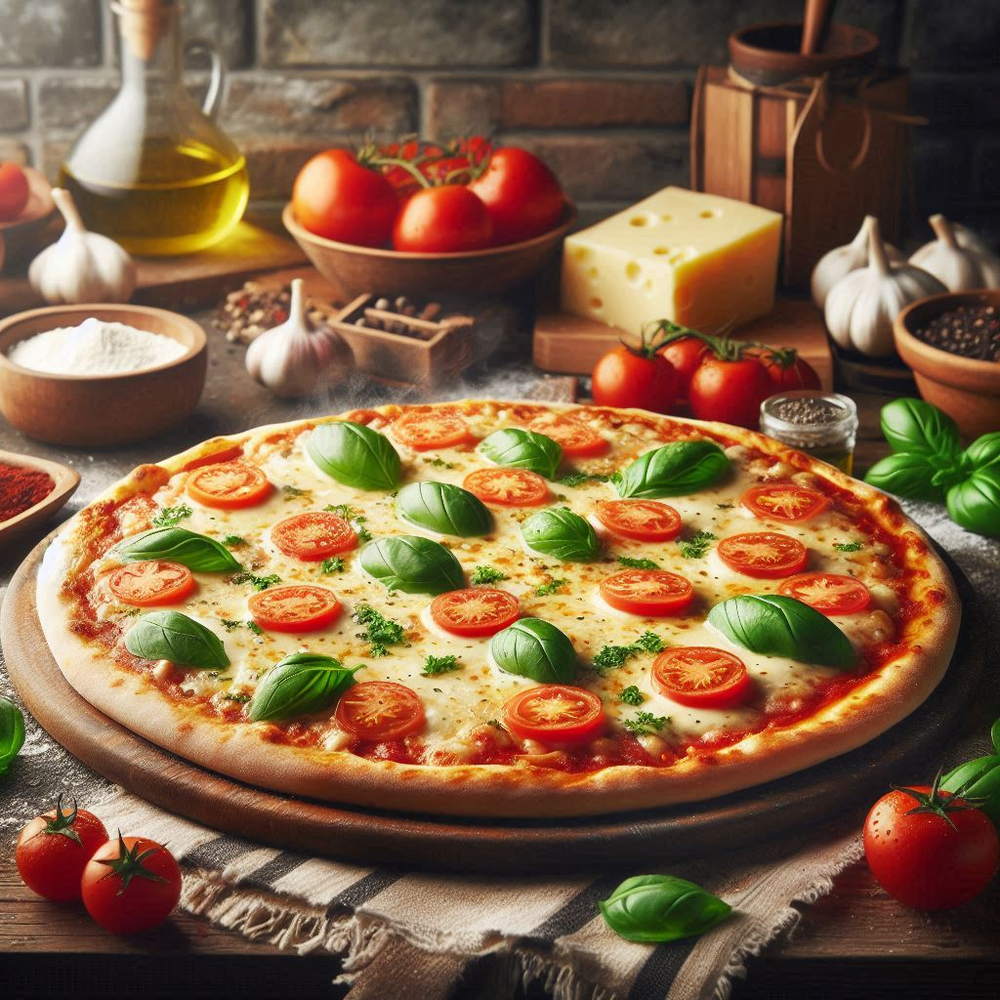
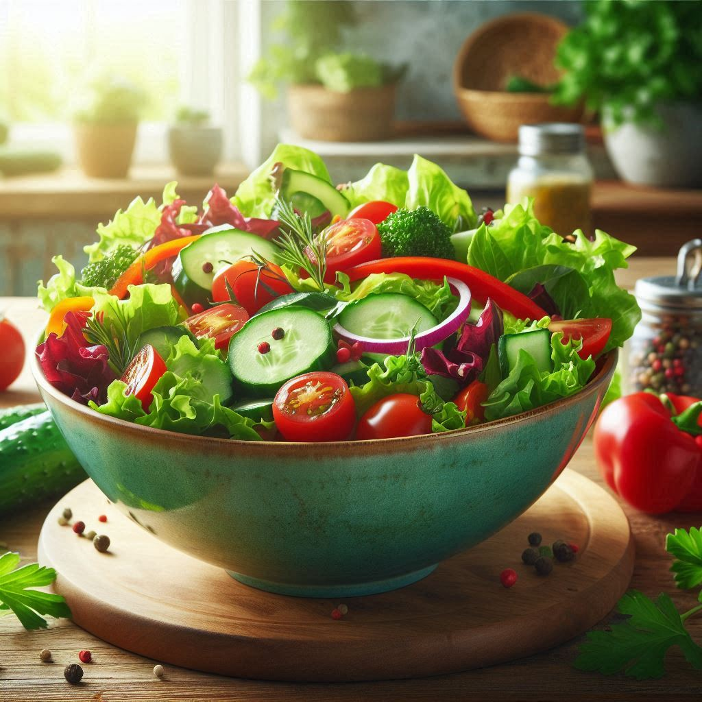
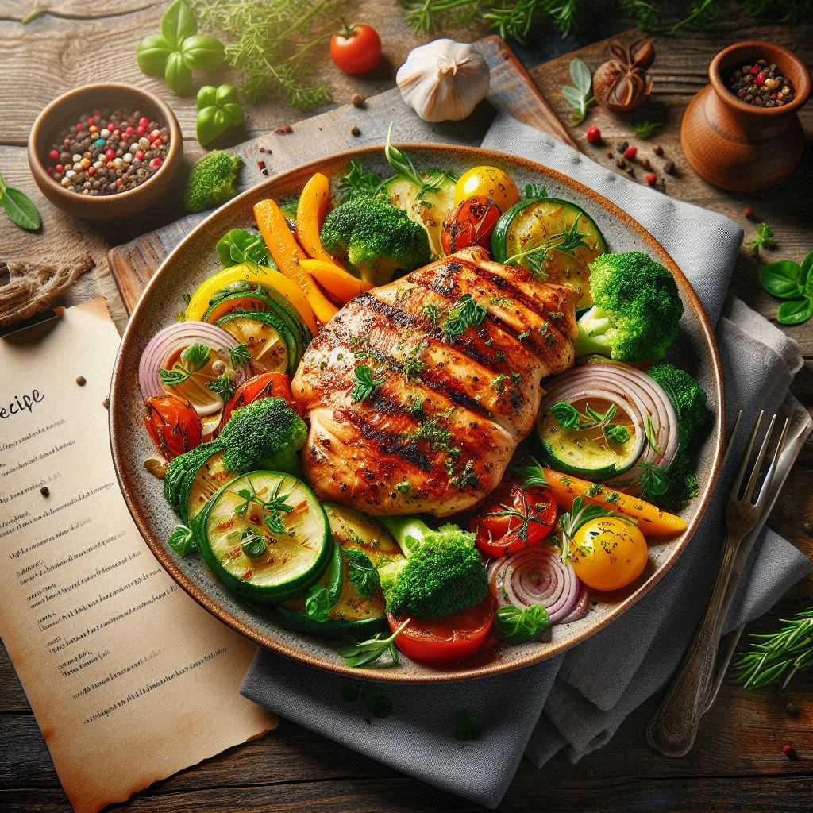

Pasta Delight

Ingredients:
- 200g pasta (any type)
- 2 tbsp cooking oil or butter
- 2 cloves garlic (finely chopped)
- 1 small onion (chopped)
- 1 tomato (pureed)
- 1/2 tsp red chili powder
- 1/2 cup grated cheese
- Salt & pepper to taste
How to Make:
- Boil pasta as per packet instructions and keep aside.
- Heat oil or butter in a pan, sauté garlic and onions until soft.
- Add tomato puree, chili powder, salt, and cook for a few minutes.
- Mix in boiled pasta, stir well, and let it absorb flavors.
- Top with grated cheese and serve hot!
Cheesy Pizza

Ingredients:
- 1 pizza base (store-bought or homemade)
- 1/2 cup tomato sauce or ketchup
- 1 cup grated mozzarella cheese
- 1/2 cup capsicum (chopped)
- 1/2 tsp oregano or mixed herbs
How to Make:
- Preheat oven or tawa (pan).
- Spread tomato sauce evenly on the pizza base.
- Layer mozzarella cheese and chopped capsicum.
- Sprinkle oregano on top and bake for 15 minutes at 180°C (or cook covered on a tawa for 10 minutes).
- Slice and serve hot!
Refreshing Salad

Ingredients:
- 1 cup cucumber (diced)
- 1 cup tomato (diced)
- 1/2 cup onion (chopped)
- 1 tbsp lemon juice
- Salt & black pepper to taste
How to Make:
- Chop all ingredients and place them in a bowl.
- Drizzle with lemon juice and mix well.
- Add salt and black pepper for taste.
- Serve fresh as a side dish or appetizer!
Grilled Chicken

Ingredients:
- 2 chicken breasts
- 2 tbsp mustard or lemon juice
- 1 tsp ginger-garlic paste
- 1 tsp turmeric & chili powder
- 1 tbsp yogurt (for marinade)
- Salt to taste
How to Make:
- Mix all ingredients and marinate the chicken for 30 minutes.
- Heat a grill or pan, cook chicken for 7 minutes per side.
- Drizzle lemon juice before serving.
- Enjoy your juicy grilled chicken!